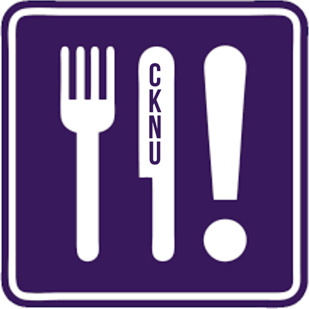

Volunteer a shift
Prep, pack, or deliver: pick what works for your schedule. Shifts are a great way to meet people and do something good with an afternoon.
Email us to sign up →CKNU · Student-run at Northwestern
The Campus Kitchen at Northwestern University rescues surplus food on campus, preps and repackages it, and gets it to our neighbors. Grab a shift, bring a friend, and help us make sure good food ends up on plates, not in the trash.

CKNU is a student-run organization at Northwestern. We recover food that would otherwise go to waste, prep and repackage it in our prep kitchen, and share it with community partners who can use it.
We're powered by student volunteers: shift leads who run the prep kitchen, volunteers who show up to prep, pack and deliver, and the exec board keeping it all moving. No experience needed. If you can put on gloves and a hairnet, you're in.
We collect good, unused food on campus before it gets thrown away.
Volunteers and shift leads portion, repackage and label it in our prep kitchen, logging everything so nothing goes past its best.
Meals go out to our community partners and the neighbors they serve.
Live from our kitchen log.
A peek inside our prep kitchen at Hinman. Tap a photo to see it bigger.
More on Instagram: @NUCampusKitchen
Prep, pack, or deliver: pick what works for your schedule. Shifts are a great way to meet people and do something good with an afternoon.
Email us to sign up →Love being in the kitchen? Shift leads run shifts, keep food safe, and make sure every meal gets out the door.
Ask about leading →Help run CKNU behind the scenes. We open exec board applications each year; watch our Instagram so you don't miss them.
See announcements →Have surplus food, supplies, or want to partner with us? Whether you're a campus group, a local organization, or someone who just wants to help, we'd love to hear from you.
Get in touch